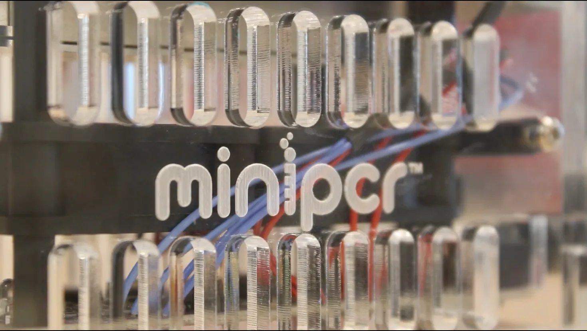
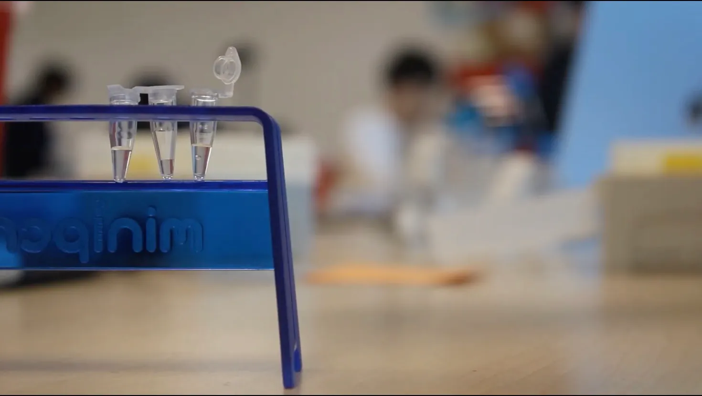

As our final major project in our media and technology class, we were tasked with determining how race affects our relative genetics. We did this by extracting, duplicating, and measuring a specific section of our DNA called the D1S80 locus. To do this, we used a multitude of biotechnological techniques and scientific tools. Finally, we used Adobe Premiere to create a short film about our process through this project.
To measure our DNA (Deoxyribonucleic Acid), we first extracted it using swabs and buffer material. Next, we duplicated the D1S80 locus using PCR (Polymerase Chain Reaction) amplification. This process created a large enough DNA sample for Gel Electrophoresis. We measured our D1S80 locus's length, which varies between people based on genetics. The following is my part of my group's short film on our project:
Race is not and has not ever been biologically real, contrary to popular belief. In our media and technology class, we extracted and measured our DNA. More specifically, we collected our cheek cells, used PCR (polymerase chain reaction) amplification to copy a specific gene on our first chromosome called the D1S80 locus. The D1S80 locus is classified as a variable number tandem repeat (or VNTR) that is standardly duplicated 14 to 41 times. After we duplicated the allele, we used a technique called gel electrophoresis to measure the lengths of our D1S80 samples by applying an electrical current to an agarose gel to push the DNA through. Due to the fact that longer strands of DNA can not move through the microscopically porous gel as fast, they do not travel as far as the shorter strands, allowing us to measure them against a “ruler” sample that included pre-measured DNA lengths. For this, we used a program called Adobe Photoshop to calculate the pixel lengths, and we used a program called Google Sheets to graph and extrapolate the true lengths of our samples in base pairs using a logarithmic model. We found that people tended to actually match more closely with people of different ethnicities, as opposed to with people with the same self-identified racial makeup. This data is corroborated by a paper published by the National Institutes of Health (NIH), which clearly stated that, “The completion of the Human Genome Project in 2003 confirmed humans are 99.9% identical at the DNA level and there is no genetic basis for race.” It is commonly believed that race is a biological reality because—socially—race is incredibly impactful. To think that something that (unfairly) dictates so much of our lives has little to no true basis in human biology is counterintuitive to say the least. Humans are all so visually and socially unique that it would seem to be the only logical conclusion that our genetics are totally different. To the average observer, it seems clear that there are different “subclasses” of humans and that we fit cleanly into different groups, but the truth is far more nuanced; genetics is a fluid spectrum. The color of someone’s skin, hair, or eyes is almost completely separate from the rest of someone’s genome. In our experiments, we clearly saw that the identifying VNTR we examined had no positive correlation with self-identified race. Beyond this, no large-scale, evidence-based study across biology, genetics, or anthropology has ever successfully proven that races truly exist in a scientific sense. If race were genetically real, we would clearly see, at the very least, some type of correlation between “race” and the number of repeats in the D1S80 VNTR in our experiment, and in many others carried out globally. Race is very much socially and psychologically real, though. The implicit association test (IAT) is an online experiment that analyzes and measures one’s implicit social bias. The test functions by asking participants to sort images of European and African American faces. Then, the test asks the taker to also sort words with obvious positive or negative connotations (i.e., great, fantastic, awful, amazing, bad, good, etc). After this, the test combines these two sorting activities into one, with the participant sorting words with positive connotations to one side and negative connotations to the other, while also sorting individuals of fair skin tones to one side and darker skin tones to the other. Finally, the test switches the sides of either the connotative words or the face images. The IAT forces the taker to rely less on conscious thought and more on their internal biases and subconscious associations, revealing people’s suppressed opinions on others. Typically, American citizens tend to have a racial bias towards individuals of lighter skin (~70% seemed to favor the faces of white individuals) and more European facial traits, as opposed to the disfavored African American faces used in the test. Additionally, in a lesson conducted by Jane Elliott on April 5, 1968, Elliot told her third-grade students that brown-eyed students were less intelligent and generally inferior to blue-eyed students. Elliot forced the “brown-eyes” to wear black collars to denote their lesser status and diminished their privileges, segregating them from the blue-eyed students in recess and at drinking fountains, among many other hierarchical changes. Elliot tested both groups with flashcards and tracked how long it took the students to correctly answer all of the cards. The next day, the experiment was repeated, but the roles were reversed; Elliot argued that the brown-eyed students were, after all, superior to those with blue eyes, and subjected them to the same treatment the “brown-eyes” had faced the previous day. After the students’ social standings had been inverted, the newly prosecuted blue-eyed students performed significantly worse on the flashcard test than they had the day prior. Inversely, the brown-eyed students significantly reduced the time it took them to complete their assessment. After the experiment, Elliot asked students how it felt to be looked down upon and forced to exist under the other group. Many students reported that it was far harder to think and learn under the pressure of the discrimination, as well as finding simply existing much more challenging. Truly, for something to be real, it has to be tangible and measurable to some extent, and have genuine evidence leading to the conclusion that it exists. More specifically, for something to be socially or psychologically real, it needs to impact people, socially or mentally, and be at least partially quantifiable in some manner. Given the nature of this definition, it seems that the only logical conclusion is that race exists socially and psychologically. The results of the IAT clearly indicated that there is a significant widespread racial bias across the United States that places white people above black people. Around 70% found it easier to group the negatively connotated words with African American individuals’ faces, and the positively connotated words with faces of European heritage. This certainly shows that a true, concrete, and measurable racial bias does exist. In addition, Elliot’s social experiments showed that race and racially discriminative analogs do indeed impact the human mind and its mental performance, with targeted individuals taking minutes more to complete the flashcard tests.


This project has helped me progress in many different 21st-century skill categories. Mostly, though, I believe this project has helped me to progress my Critical Thinking and Problem Solving abilities. With the focus of this project being to complete such a complex task as measuring my DNA, I had to work through many unique and diverse issues, while also completing creative tasks like editing a short film. This made me think critically and problem-solve with multiple factors that were completely unique to my own project. This is not to say that I did not progress in other areas significantly, but to say that this project specifically targeted the development of this set of 21st-century skills.